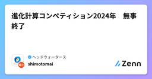
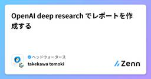
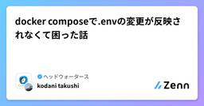

ヘッドウォータースのフィード
https://zenn.dev/p/headwaters
株式会社ヘッドウォータースのテックブログです。 生成AI、LLM、Azureのサービスや資格、IoT、XR系などData&AIとApp modernizeに関して幅広く投稿します！
フィード

進化計算コンペティション2024年 無事終了
ヘッドウォータースのフィード
昨年末に2024年進化計算コンペティションを開催し、なんとか無事終了しました。関係者の皆様に感謝いたします。今回は進化計算コンペティションについて説明します。https://www.headwaters.co.jp/news/competitions_eccomp2024_support_hws.html 進化計算コンペティションのながれ進化計算コンペティションというのは前回もお話しした通り、最適化のコンペティションです。毎年テーマが決まっていて、今年のテーマはナンプレの問題作成でした。進化計算コンペティションは１１月から１か月ほどかけて開催され、１２月２１日の進化計算...
1日前
【学習ログ】Pythonを使ってJSONデータをExcelへ自動変換
ヘッドウォータースのフィード
今回は、Pythonスクリプトを通じて、JSONからExcelへの変換処理について学習したので、アウトプットとして記事を共有します。 ディレクトリ構成図─ json_to_excel ├ input | ├ sample1.json | ├ sample2.json | └ template.xlsx ├ output | └output.xlsx(ない場合は自動的に作成される) └ src └main.py ・・・ スクリプトの概要このスクリプトは以下の機能を提供します。指定...
1日前
streamlit で Azure Blob Storage の画像を探しやすくするアプリを作りました 1
1
ヘッドウォータースのフィード
執筆日2025/02/06 概要Azure Blob Storageに溜まった画像を確認するときにPortalでポチポチして編集から画像確認したり、Azure Storage Explolerを使ってストリーミング表示したりしていたのですが使い勝手が悪かったのでstreamlitでアプリにしてみました。荒はありますが、あまり労力をかけずにそれなりに使いやすくなった気がします。 出来ること画像の一覧表示8枚ずつのサムネイル表示と追加表示ボタン拡大表示・ダウンロード・削除コンテナ選択フィルタリングprefixフィルタ（多層対応）BLOB名キーワード検索...
2日前

OpenAI deep research でレポートを作成する
ヘッドウォータースのフィード
執筆日2025/2/3 deep researchとは？ChatGPTで利用できるAIAgentです。プロンプトを与えると、インターネット上の情報を検索/推論を行い調査結果をまとめることができます。また、deep researchは、「o3」をベースにしています。https://openai.com/index/introducing-deep-research/ 制限2025/2/3時点では、Proユーザーのみ利用可能1か月あたり最大100件のクエリを実行可能 検証方法詳細なリサーチを選択する調査するためのプロンプトをする調査結果、合っ...
5日前

docker composeで.envの変更が反映されなくて困った話
ヘッドウォータースのフィード
概要タイトルの通りですが、docker composeでイメージビルドをする際に.envを変更しても環境変数の変更が反映されずに困ったという話です。Dockerfile内でgit cloneを行う際のリポジトリパスワードを.envで管理していたのですが、docker compose build --no-cacheで再ビルドを行ったところパスワード期限切れでエラーが出たため、.envを変更してもう一度実行したところ変更が反映されていませんでした。色々調べてイメージやキャッシュの削除をしたり、dockerの再起動をしたりしても反映されずに困りました。 対処コンソールを再起動...
5日前
Microsoft Applied Skills を受験してみて
ヘッドウォータースのフィード
はじめにMicrosoft Applied Skills という資格試験があるということを最近知り、受験してみました。 Microsoft Applied SkillsとはMicrosoft Applied Skills は、Microsoftが提供するスキル開発プログラムの一部で、特定の技術やツールに関する実践的なスキルを習得するためのトレーニングや認定プログラムです。このプログラムは、ITプロフェッショナルや開発者が最新の技術を学び、実際の業務に応用できるスキルを身につけることを目的としています。以下のような特徴があります。ハンズオンラボ：実際の環境で技術を試し、実...
6日前

AppleIntelligenceのWriting Toolsの機能紹介
ヘッドウォータースのフィード
以下の記事でAppleIntelligenceの紹介をしました。今回はその一つである「Writing Tools」に焦点を当てます。https://zenn.dev/headwaters/articles/d90998469039fe 機能紹介テキストを選択するとWritingToolsという選択肢が出ます。タップすると以下のようなモーダルが登場します。 テストケース検証にあたって以下の検証文を作りました。想定海外のエンジニアと開発のコミュニケーションを取っている時日本語PRを確認しました。3点認識合わせしたいです。1点目：ローカル環境での動作確...
6日前
Apple Intelligenceって具体的に何ができるの 2
ヘッドウォータースのフィード
2024年の6月に登場したApple Intelligence業務ではMacbook、私生活ではiPhoneを使ってるので今後どんな便利な機能が登場するのか気になったので調査してみた。https://www.apple.com/jp/apple-intelligence/ 動作環境、使えるデバイスiOS18のiPhoneとiPad、macOS SequoiaのMacbookで利用が可能です。対応デバイスは以下です。まだ日本語には対応できてないですが、4月以降から順次使えるようになってくるそうです。https://www.goodspress.jp/howto/65251...
6日前
Appleが研究しているMLXとは
ヘッドウォータースのフィード
Appleデバイスのローカル上でLLMを動かす研究をしてます。メジャーなのはllama.cppですが、調べていくうちにデバイスによってはMLXの方が良さそうだったので紹介。 MLXとはAppleが開発した機械学習フレームワークで、モデル形式のことです。特にAppleシリコン（M1とかM2とか）向けに最適化されていて、Metalを活用した高速な推論を実現してくれます。https://opensource.apple.com/projects/mlx/ MetalとはAppleが開発したGPU向けのAPIで、主にApple製品で動作します。ローカルでLLMを実行するときに...
6日前

【学習ログ】RAGとは
ヘッドウォータースのフィード
はじめまして、株式会社ヘッドウォータースの山尾弘大（やまお こうだい）です。今回はRAGについて勉強したのでアウトプットとしてZennに記事を投稿します。まず、RAGを説明する前にLLM（大規模言語モデル）について説明します。 LLM（大規模言語モデル）LLM（大規模言語モデル）とは膨大なテキストデータとディープラーニングを用いて構築された技術のことです。身近な例でいうと「ChatGPT」や「Gemini」などもこのLLMによって回答を生成しています。LLMは、人が話す言葉（自然言語）を理解して、文章を作成したり、質問に回答したりするロボットというイメージを持ってもらうとわか...
8日前
テスト駆動開発(TDD)入門
ヘッドウォータースのフィード
テスト駆動開発(TDD)入門 はじめにテスト駆動開発（TDD）について、概念的なものは理解していたものの、改めて整理したので備忘録します。（今度プロジェクトで試しにやってみる） TDDとはテスト駆動開発（TDD）は、より良いコードを書くためのプログラミング手法。TDDというとテストの手法かと思ってしまいますが、高品質なプロダクトコードを作成するための開発手法です。 TDDに関するよくある勘違い❌ 「TDDはテスト手法である」❌ 「TDDさえすれば他のテストは不要」アプリケーションの単体テストに有効E2Eテスト（ユーザーが一連の操作を最初から最後まで通...
8日前
ブロッホ球について
ヘッドウォータースのフィード
ブロッホ球についてのレイサマリーです。ディープラーニングの学習の時に、バックプロパゲーションの理解が初学者の関門になる気がするのですが、量子コンピュータの理解に置いてはこのブロッホ球が理解できるかどうかが初期のハードルになるのではないかと、個人的には思っています。(私も思いっきり初学者ですが。。) What(どの様なものなのか)量子ビット(二準位系の量子状態)の状態を以下の様な球面上の点の位置に置き換えたモデル量子ビットの状態は \ket{\psi} = \alpha \ket{0} + \beta \ket{1} という式(波動関数)で表すことが出来る (| \alph...
8日前
DeepSeek-R1(本物) の 1.58bit版 を Jetson AGX Orinで回してみる
ヘッドウォータースのフィード
Bitnet版のDeepSeek-R1を触ってみました。蒸留版ではないです。https://huggingface.co/unsloth/DeepSeek-R1-GGUF 実行速度はこのぐらい(止まってないです。。)途中でとめましたが、数字でみると以下の通りです。llama_perf_sampler_print: sampling time = 21.34 ms / 156 runs ( 0.14 ms per token, 7310.22 tokens per second)llama_perf_context_print: ...
9日前
【レイサマリー】Transformerについて
ヘッドウォータースのフィード
本記事の目的 Transformerの知識の確認とアウトプットをする レイサマリーの練習をする どのような技術か深層学習で使用する学習モデル構造の一種。様々なデータ形式(言語・音声・画像等)の学習時に利用できるモデル。提案された当初はEncoder-Decoderモデルだが、Encoderのみ(BERT)、Decoderのみ(GPT)のモデルも存在する。Encoder:データを特徴量に変換する機構Decoder:特徴量をデータに変換する機構内部構造がほとんどAttentionと線形層により構成されている。Attention機構データ内部やデータ間の関係...
10日前
最高スペックのiPad Pro(M4 メモリ16GB)ならPhi-4の量子化モデルもワンチャン動く説を検証
ヘッドウォータースのフィード
先に結論llama.cppだと1bit量子化モデルなら動く、しかし自然言語な回答は生成はできないmlx-swiftだと4bit量子化モデルまで動く、自然言語な回答は生成できるが質問に対する回答にはなっていない上記の結果から、「現時点ではPhi-3.5-miniの8bitを使うのが良い」です。 背景Microsoftの最新SLMモデルであるPhi-4が1月の中旬に商用利用可能となりました。「AGX Orinで動いた」や「Macbook Proで動いた」の記事を見かけたので、M4 iPad Proでもいけるんじゃねー？と社内で話題になり検証してみました。社内メンバーの検証...
10日前
最近の視覚モデルの特徴
ヘッドウォータースのフィード
最近の視覚モデルについての情報を共有します。 昨今の視覚モデル2025年現在では視覚タスクの多くが、ビジョン言語モデル (VLM) or ビジョン基盤モデル (VFM)に代表される視覚モデルで解けるようになったのではと考えています。下図のように、時を経るにしたがって視覚タスクの取り扱いがより汎用的かつ高性能になっているのが見て取れます。https://www.preprints.org/manuscript/202411.0685/v1例えば、Unified-IO 2では、1つのVFMで以下のような広範囲のタスクを解くことができます。しかも1つ1つの出来も悪くはなく、使い物...
10日前
Azure FunctionsとAzure Durable Functionsの違い
ヘッドウォータースのフィード
掲題について、GPT-o1さんに質問した回答です。 Azure FunctionsとAzure Durable Functionsの違いAzure Functions はイベント駆動型のサーバーレスプラットフォームで、HTTP や Queue、Timer、Event Grid など様々なトリガーに応じてコードを実行するための仕組みです。一方で Azure Durable Functions は Azure Functions 上で複数の関数のオーケストレーションやステートフルなワークフローを構築するための拡張機能です。両者の主な違いは以下の通りです。 1. ステートフルなオー...
10日前
最高スペックのiPad Proを購入したい人は必ず1TBを買うこと!!
ヘッドウォータースのフィード
社内の研究目的でタブレットを購入することになったので、現時点の最高スペックのiPadを買おう!というなりました。ということで「最高スペックだから、iPad Pro 11インチ ストレージ256GB M4チップを購入したらいいだろう (￣∇￣)」とポチっちゃいました...https://www.apple.com/jp/ipad-pro/specs/...しかし、よくみてみるとストレージの256GB or 512GBか1TB or 2TBでよって中身のスペックが変わるようです...CPUが9コア→10コアメモリが8GB→16GBにアップします。Youtubeで説明して...
11日前
Microsoft Fabricのレイクハウスを用いてTable化する方法（データフロー編）
ヘッドウォータースのフィード
0.対象となる読者Ⅰ．Microsoft Fabricを使いたいと考えている方Ⅱ．Microsoft Fabricを利用しているが、レイクハウスがどのようなものか、どのような役割をしているかがわからない方Ⅲ. レイクハウスの使い方や活用の仕方が分からない方Ⅳ．レイクハウスのFilesやTablesの違いについて理解したい方（まだ理解できてない方）Ⅴ. レイクハウスのデータを可視化したいと考えている方そもそもレイクハウスってなに？という疑問を持っている方は自分が書いた以下の記事を参考にしていただけたらと思います。https://zenn.dev/headwaters/a...
11日前
OpenAI の Chat Completions API に投げられる画像のサイズを調べる
ヘッドウォータースのフィード
概要表題の通りですが、自分の知る限りではドキュメントに画像サイズの制限について書かれていないため、どの程度のサイズの画像ファイルまで分析できるのか調べました。（一応GPT-4 Turbo with Visionのときは20MB制限という記述があるのですが、GPT-4oでは20MBを下回っていてもエラーが出ることがあります） 結果ファイルサイズとしては5~10MB程度のファイルサイズを超える辺りでエラーが出る傾向が確認できました。しかし、今回試した方法で、画像がこうだとエラーが出る、というのを正確に測ることは出来ませんでした。画像サイズを大きくしていくとエラーが出ることは確認...
11日前